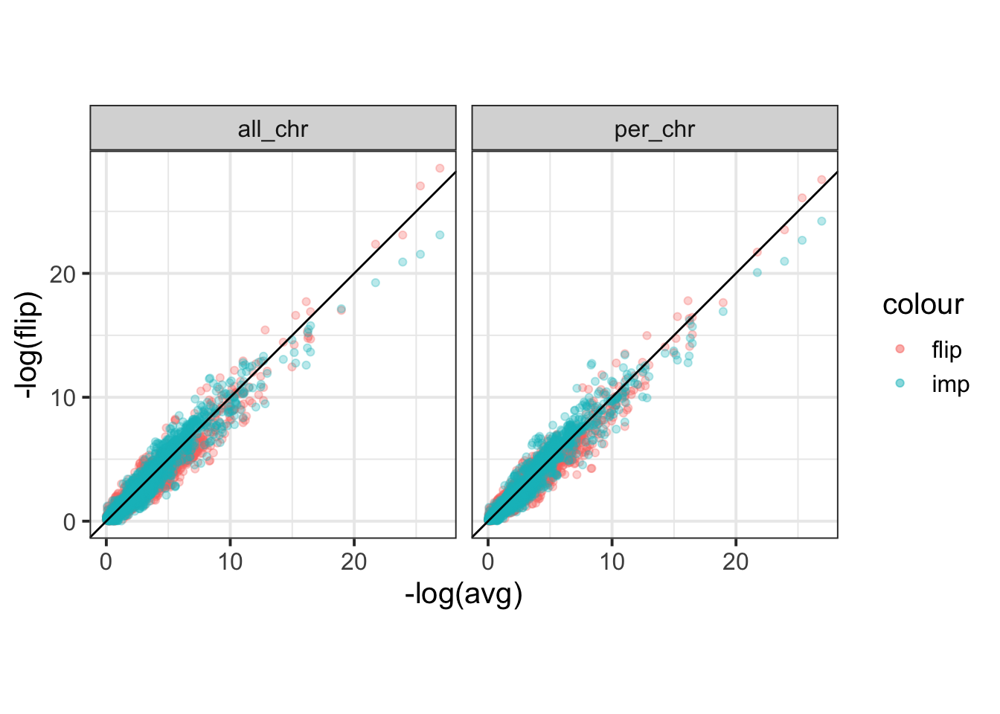

rm(list = ls())
library(ggplot2)
library(dplyr)
library(patchwork)
library(data.table)
library(reticulate)
library(pander)
options(datatable.fread.datatable = FALSE)
np <- import("numpy")
set.seed(2020)
source('../code/rlib_misc.R')I’ve implemented a pipeline doing the haplotype imputation based GWAS which includes three major scripts:
scripts/prs/naive_prs.pyscripts/haplotype_imputation/impute_parent_of_origin.pyscripts/logistic_gpu/run_haplo_logistic_solver.pyAs first pass effort, I run GWAS on paternal phenotype with imputed haplotype (Alzheimer’s disease, AD). The result is directly comparable to the paternal GWAS on AD reported in Marioni et al. (2018). I tested on chromosome 16 and 19.
Two imputation (labeled as imp) approaches are tested: 1) sex-specific EM (labeled as em); 2) non sex-specific EM (as em_deg). Besides, I include \(\Pr(Z) = 0.5\) as avg, and flip which flip the imputation by using \(1 - Pr(Z)\).
Besides, I also run on heart disease (HD) on the side, though I don’t have an existing GWAS to compare to.
snp_map = fread('zcat < ~/Desktop/tmp/haplotype-po/snp_map_for_neale_lab_gwas.with_sign.tsv.gz', header = TRUE, sep = '\t')
dl = list()
dl2 = list()
chromosomes = 1 : 22
traits = c('HD', 'AD', 'HT')
for(chr_num in chromosomes) {
pos = snp_map %>% filter(chrom == chr_num) %>% pull(pos)
for(i in 1 : length(traits)) {
filename = paste0('/Users/yanyul/Desktop/tmp/haplotype-po/from_lambda/gwas_multi_chr/chr', chr_num, '.npy')
df = read_from_npy(
paste0(filename),
pos,
i
)
df = df %>% mutate(chr = chr_num, trait = traits[i])
dl[[length(dl) + 1]] = df
}
for(i in 1 : length(traits)) {
filename = paste0('/Users/yanyul/Desktop/tmp/haplotype-po/from_lambda/gwas/chr', chr_num, '.npy')
df = read_from_npy(
paste0(filename),
pos,
i
)
df = df %>% mutate(chr = chr_num, trait = traits[i])
dl2[[length(dl2) + 1]] = df
}
}
df = do.call(rbind, dl)
df2 = do.call(rbind, dl2)
df = rbind(df %>% mutate(impute_scheme = 'all_chr'), df2 %>% mutate(impute_scheme = 'per_chr'))df_ht = df %>% filter(trait == 'HT') %>% mutate(pval = beta2pval(beta, se))gwas_self = fread('zcat < ~/Desktop/tmp/haplotype-po/20002_1065.gwas.imputed_v3.both_sexes.tsv.bgz|awk \'{split($1,a,":"); print $0"\t"a[1]":"a[2]}\'', header = T, sep = '\t', data.table = F)
# gwas_parent = fread('zcat < ~/Desktop/tmp/haplotype-po/20107_8.gwas.imputed_v3.both_sexes.tsv.bgz | grep "^16:\\|^19:"', header = F, sep = '\t', data.table = F)
gwas_self = gwas_self %>% mutate(snp = `variant:`)
gwas_self = gwas_self %>% filter(snp %in% unique(paste0(df_ht$chr, ':', df_ht$position)))
gwas_ht_bonferroni = gwas_self %>% filter(pval < 0.1 / n(), !low_confidence_variant)df_ht %>% filter(paste0(chr, ':', position) %in% gwas_ht_bonferroni$snp) %>% reshape2::dcast(position + chr + impute_scheme ~ impute, value.var = 'pval') %>% ggplot() + geom_point(aes(x = -log(avg), y = -log(flip), color = 'flip'), alpha = .3) + geom_point(aes(x = -log(avg), y = -log(imp), color = 'imp'), alpha = .3) + geom_abline(slope = 1, intercept = 0) + coord_equal() + facet_wrap(~impute_scheme)
df_ht %>% filter(paste0(chr, ':', position) %in% gwas_ht_bonferroni$snp) %>% reshape2::dcast(position + chr + impute_scheme ~ impute, value.var = 'pval') %>% ggplot() + geom_point(aes(x = -log(flip), y = -log(imp))) + geom_density2d(aes(x = -log(flip), y = -log(imp))) + geom_abline(slope = 1, intercept = 0, color = 'gray') + coord_equal() + facet_wrap(~impute_scheme)df_ht %>% filter(paste0(chr, ':', position) %in% gwas_ht_bonferroni$snp) %>% reshape2::dcast(position + chr + impute_scheme ~ impute, value.var = 'pval') %>% ggplot() + geom_point(aes(x = -log(avg), y = -log(imp))) + geom_density2d(aes(x = -log(avg), y = -log(imp))) + geom_abline(slope = 1, intercept = 0, color = 'gray') + coord_equal() + facet_wrap(~impute_scheme)df_ht %>% filter(paste0(chr, ':', position) %in% gwas_ht_bonferroni$snp) %>% filter(chr %in% c('21', '22'), impute == 'imp') %>% reshape2::dcast(position + chr ~ impute_scheme, value.var = 'pval') %>% ggplot() + geom_point(aes(x = -log(per_chr), y = -log(all_chr))) + geom_abline(slope = 1, intercept = 0, color = 'gray') + coord_equal() + facet_wrap(~chr)df_ht %>% filter(paste0(chr, ':', position) %in% gwas_ht_bonferroni$snp) %>% filter(chr %in% c('1', '2', '3', '4', '5'), impute == 'imp') %>% reshape2::dcast(position + chr ~ impute_scheme, value.var = 'pval') %>% ggplot() + geom_point(aes(x = -log(per_chr), y = -log(all_chr))) + geom_abline(slope = 1, intercept = 0, color = 'gray') + coord_equal() + facet_wrap(~chr)df_ht %>% filter(paste0(chr, ':', position) %in% gwas_ht_bonferroni$snp) %>% filter(chr %in% c('6', '7', '8', '9', '10'), impute == 'imp') %>% reshape2::dcast(position + chr ~ impute_scheme, value.var = 'pval') %>% ggplot() + geom_point(aes(x = -log(per_chr), y = -log(all_chr))) + geom_abline(slope = 1, intercept = 0, color = 'gray') + coord_equal() + facet_wrap(~chr)df_ht %>% filter(paste0(chr, ':', position) %in% gwas_ht_bonferroni$snp) %>% filter(chr %in% c('11', '12', '13', '14', '15'), impute == 'imp') %>% reshape2::dcast(position + chr ~ impute_scheme, value.var = 'pval') %>% ggplot() + geom_point(aes(x = -log(per_chr), y = -log(all_chr))) + geom_abline(slope = 1, intercept = 0, color = 'gray') + coord_equal() + facet_wrap(~chr)df_ht %>% filter(paste0(chr, ':', position) %in% gwas_ht_bonferroni$snp) %>% filter(chr %in% c('16', '17', '18', '19', '20'), impute == 'imp') %>% reshape2::dcast(position + chr ~ impute_scheme, value.var = 'pval') %>% ggplot() + geom_point(aes(x = -log(per_chr), y = -log(all_chr))) + geom_abline(slope = 1, intercept = 0, color = 'gray') + coord_equal() + facet_wrap(~chr)Evaluate as the median of ratio of \(\log(p)\) among genome-wide significant SNPs (Bonferroni correction: 0.1 / nsnp) and the SNPs should have pval < 0.1 in both avg and imp. Another measure: ratio of abs z-score.
tmp = df_ht %>% filter(paste0(chr, ':', position) %in% gwas_ht_bonferroni$snp, impute_scheme == 'all_chr') %>% reshape2::dcast(position + chr ~ impute, value.var = 'pval')
tmp %>% filter(imp < 0.1, avg < 0.1) %>% mutate(ratio_logp = log(imp) / log(avg), z_imp = qnorm(imp, lower.tail = F), z_avg = qnorm(avg, lower.tail = F)) %>% mutate(ratio_z = z_imp / z_avg) %>% group_by(chr) %>% summarize(median_ratio_logp = median(ratio_logp), mean_ratio_logp = mean(ratio_logp), nsnp = n(), median_ratio_z = median(ratio_z), mean_ratio_z = mean(ratio_z)) %>% write.csv('../analysis_output/gw_check_multi_chr.power.csv', row.names = F)d1 = read.csv('../analysis_output/gw_check_multi_chr.power.csv')
d2 = read.csv('../analysis_output/gw_check.power.csv')
plot(d1$mean_ratio_z, d2$mean_ratio_z); abline(a = 0, b = 1)df_ad = df %>% filter(trait == 'AD') %>% mutate(pval = beta2pval(beta, se))gwas_ad = fread('cat ~/Downloads/4_UKB_IGAP_AD_meta_summary_output_June2019.txt|awk \'{print $0" "$1":"$2}\'', header = T, sep = ' ', data.table = F)
gwas_ad = gwas_ad %>% mutate(snp = `CHR:BP`)
gwas_ad = gwas_ad %>% filter(snp %in% unique(paste0(df_ht$chr, ':', df_ht$position)))
gwas_ad_bonferroni = gwas_ad %>% filter(P < 0.1 / n())gwas_ad %>% filter(CHR != 19) %>% mutate(pexp = rank(P) / (n() + 1)) %>% ggplot() + geom_point(aes(x = -log(pexp), y = -log(P))) + ggtitle('QQ-plot of external AD GWAS: \n meta analysis of UKB parental AD + IGAP (exclude chr19)')df_ad %>% filter(chr != 19) %>% filter(paste0(chr, ':', position) %in% gwas_ad_bonferroni$snp) %>% reshape2::dcast(position + chr + impute_scheme ~ impute, value.var = 'pval') %>% ggplot() + geom_point(aes(x = -log(avg), y = -log(flip), color = 'flip'), alpha = .3) + geom_point(aes(x = -log(avg), y = -log(imp), color = 'imp'), alpha = .3) + geom_abline(slope = 1, intercept = 0) + coord_equal(xlim = c(0, 25), ylim = c(0, 25)) + facet_wrap(~impute_scheme) df_ad %>% filter(chr != 19) %>% filter(paste0(chr, ':', position) %in% gwas_ad_bonferroni$snp) %>% reshape2::dcast(position + chr + impute_scheme ~ impute, value.var = 'pval') %>% ggplot() + geom_point(aes(x = -log(flip), y = -log(imp))) + geom_density2d(aes(x = -log(flip), y = -log(imp))) + geom_abline(slope = 1, intercept = 0, color = 'gray') + coord_equal() + facet_wrap(~impute_scheme) + lims(x = c(0, 25), y = c(0, 25))df_ad %>% filter(chr != 19) %>% filter(paste0(chr, ':', position) %in% gwas_ad_bonferroni$snp) %>% reshape2::dcast(position + chr + impute_scheme ~ impute, value.var = 'pval') %>% ggplot() + geom_point(aes(x = -log(avg), y = -log(imp))) + geom_density2d(aes(x = -log(avg), y = -log(imp))) + geom_abline(slope = 1, intercept = 0, color = 'gray') + coord_equal() + facet_wrap(~impute_scheme) + lims(x = c(0, 25), y = c(0, 25))Marioni, Riccardo E, Sarah E Harris, Qian Zhang, Allan F McRae, Saskia P Hagenaars, W David Hill, Gail Davies, et al. 2018. “GWAS on Family History of Alzheimer’s Disease.” Translational Psychiatry 8 (1). Nature Publishing Group: 1–7.